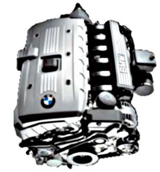
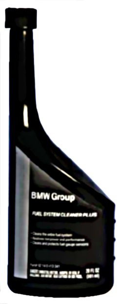

Fuel System - Fuel Quality and Additive Information
SI B 13 07 06Fuel Systems
November 2006
Technical Service
SUBJECT
Gasoline Quality & Detergent Additives - Customer Information Brochure
MODEL
All
INFORMATION
In recent years, field experiences have shown a significant increase in various driveability complaints due to variations in fuel quality offered by different manufactures in the U.S.
The quality of gasoline is determined by many factors, with the percentage of alcohol (mainly ethanol) and the level of detergent additives becoming the key contributors.
To help BMW Technicians correctly understand and diagnose fuel driveability problems, the following Service Information Bulletins were published in TIS:
- B13 01 06 - Alcohol Fuel Blends in BMW Vehicles;
- B13 02 06 - Top Tier Detergent Gasoline in BMW Vehicles;
- B13 03 06 - Fuel Pump Failure after Refueling with Ethanol Blend;
- B13 04 06 - Alcohol Detection Procedure;
- B13 05 06 - BMW Group Fuel System Cleaner Plus.
It becomes extremely important to educate BMW consumers about importance of gasoline quality, and its influence on vehicle's driveability.
In order to help you communicate fuel quality related topics to your customers, BMW NA published a consumer brochure: "Beyond Octane - How additives in gasoline are affecting your BMW's performance". Copy of this brochure is attached.
It is available from Harte-Hanks at 609-409-2737, or via CenterNet under After sales-Marketing materials (item BMW-FAB-10/06; cost $0.00; max. order 50 pieces).
Make sure to provide this information to your BMW owners.
WARRANTY INFORMATION
For information only.
Coming clean on gasoline: ethanol, additives and how fuel mixtures affect your engine.
If you think all gasoline is the same, try telling that to your engine.
There are significant differences in the fuel quality offered by different manufacturers in the U.S. The quality of the fuel is determined by the percentage of ethanol in the mixture and the level of detergent additives.

Depending on these factors, your vehicle's performance and fuel efficiency can be affected.
Beyond octane:
How additives in gasoline are affecting your BMW's performance.
What you should know about what goes into your tank.
What is Ethanol?
Ethanol is a type of alcohol which is combined with gasoline, primarily to reduce engine knock. In combustion, ethanol provides less energy than gasoline, resulting in reduced fuel economy. When ethanol burns inside the engine, it tends to form a weaker mixture that may cause misfire, rough idle and cold start issues in your vehicle. In addition, engine components may deteriorate overtime when in contact with ethanol.
Consequently, commercial gasoline is limited to a maximum of10% ethanol. As stated in your BMW Owner's Manual, fuels containing 10% or less ethanol will NOT void the applicable warranties covering defects in materials or workmanship.
Detergent additives and how they affect fuel quality.
Detergent additives have been required by the EPA in gasoline since 1995 to control the formation of engine and fuel system deposits. Lower quality gasoline is formulated with less effective and less expensive detergent additives. Over time, even occasional use of this gasoline robs your engine of its power, performance and fuel efficiency.
What gasoline does BMW recommend?
BMW recommends using TOP TIER Detergent Gasoline with a minimum octane rating of AKI 91. This gasoline also complies with the 10% orless ethanol requirement. It's a higher standard with enhanced fuel detergency that helps to avoid driveability problems.
Get better performance from a cleaner engine with BMW Group Fuel System Cleaner Plus.

If TOP TIER Detergent Gasoline is unavailable in your area, how can you make sure your BMW gets the full amount of detergent it needs to burn cleanly and run smoothly? For optimum cleaning, use one bottle of BMW Group Fuel System Cleaner Plus every 3,000 miles when refueling. This will help keep your BMW's fuel injectors and intake valves clean, to get the most performance, fuel efficiency - and fun - from every mile.
BMW Group Fuel System Cleaner Plus (20 fl.oz.)
8214 0 413 341 MSRP $12.50